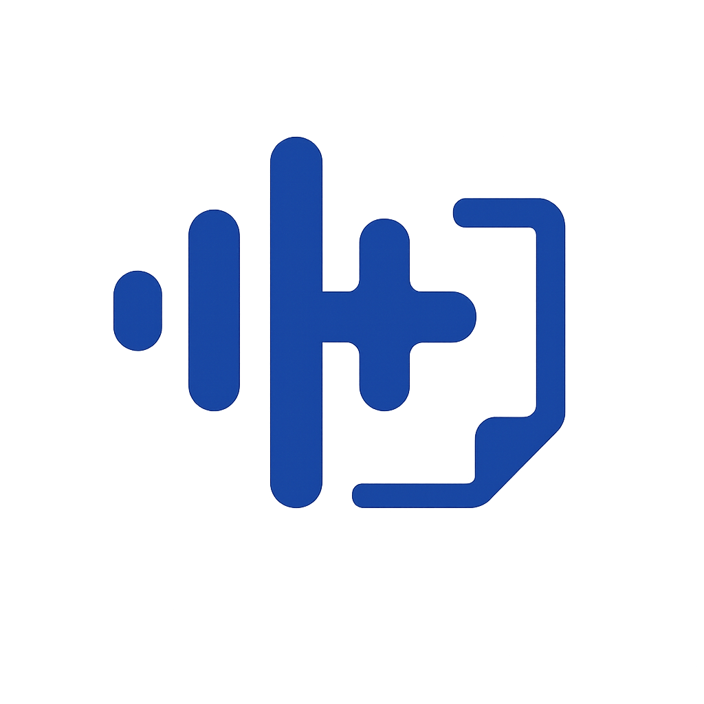

COEKAR

Brand Identity
Concept
「声が、医療の記録に変わる」
左の波形＝"話す"、右のカルテ＝"記録化"。
両者が一体化することで、COEKARの価値（音声→カルテ化）が
一目で読めるデザインを抽象化しています。
Meaning
波形（左の3本バー）
人の自然な発話を象徴。高さ差は会話のリズムや抑揚、丸い端部は"優しさ・安全性"を示します。
医療の十字（中央）
"医療"を示すシンボル。波形に重なり現れる構成は、音声が医療的な意味へ構造化されることを表現します。
カルテ括弧「]」＋折り返し（右）
カルテ／記録の"枠・保護・保存"を示す器。 折り返しは書類として残るニュアンス。括弧全体は情報が正しく収まる器＝コンプライアンスや安全な取り扱いの暗示。 コエカルの「コ」。